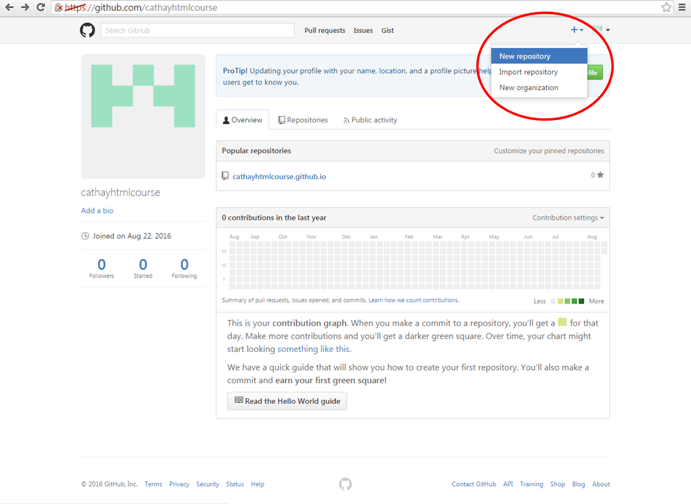
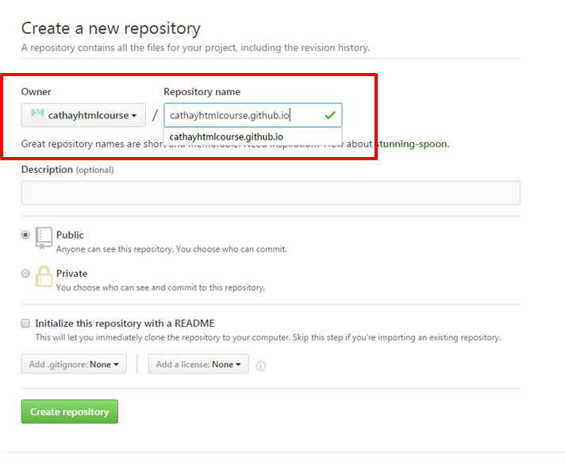

HTML, CSS, Javascript 快速入門
網頁 code 暖身
Facebook 盜密碼 + 惡搞頁面
HTML+CSS+Javascript
我們要養一隻狗，然後查狗食，然後餵牠吃
Powerpoint 的功能
reveal.js 都有，而且
- 不需安裝軟體，只需瀏覽器。行動裝置完美顯示
- 邏輯清晰，跳脫直線式
- 不需要印 pdf 給別人
- 互動式、科技感
Github 上創建 repository
創好之後，以後就繼續用這個 repo


重要: Repository name 要參考 owner!!!
把 Github repo 複製進自己電腦
在 Git Bash 裡面打:
git config --global http.sslVerify false
git clone https://github.com/username/username.github.io
把電腦的版本推到 Github 上
打:
git add --all
git commit -m "<這邊打註解>"
git push -u origin master
你的簡報會在:
http://<帳號名稱>.github.io/
輸出成 pdf
網址動點手腳後
再用 Google Chrome 的列印功能